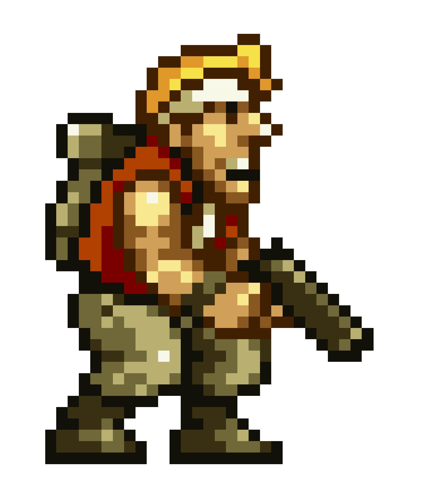
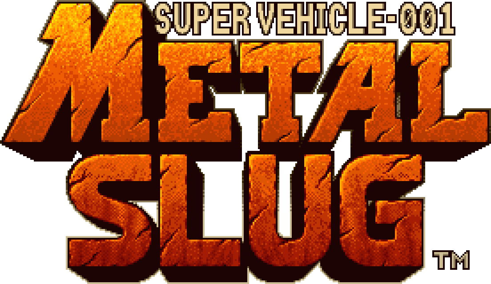

Cargando juego…
Mods
Pulsa salto de nuevo en el aire para dar un segundo impulso.
Shift izquierdo, RB del mando o el botón táctil.
Mantén pulsado disparo para disparar continuamente, con teclado o mando táctil.
Escenario en espejo y controles laterales invertidos. Textos e interfaz mantienen su orientación, también durante las misiones.
Personaliza los efectos durante la partida.
Instalar Metal Slug
Sigue las siguientes instrucciones para instalar el juego.
iPhone · Safari
Pulsa Compartir → Añadir a pantalla de inicio. Activa Abrir como app web si aparece y pulsa Añadir.
Android · Chrome
Abre ⋮ → Añadir a pantalla de inicio → Instalar.
Abre la dirección HTTPS del juego desde el teléfono. Después de la primera carga completa, puedes jugar sin conexión.
Toca un control para seleccionarlo y arrástralo para moverlo. Cada orientación conserva su propio diseño.